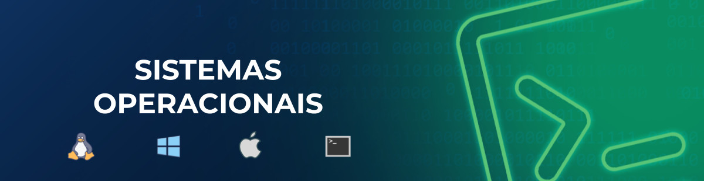

banco de dados
projeto de banco de dados

Threads
comunicação entre processos
Mini Mundo: Makerspace
No IFMaker IFPE Campus Palmares entusiastas de tecnologia e criatividade têm a oportunidade de explorar e criar projetos utilizando uma variedade de equipamentos e ferramentas de última geração.
O espaço oferece acesso a impressoras 3D, cortadoras a laser, máquinas de CNC e bancadas de eletrônica. As pessoas podem agendar horários para utilizar os equipamentos mediante pagamento por hora de uso.
Além disso, há a opção de adquirir materiais de consumo, como filamentos de PLA para impressão 3D, que são cobrados separadamente. O makerspace oferece também minicursos e eventos para compartilhamento de conhecimento e networking para a comunidade de Palmares.
Mini Mundo: E-commerce de Livros Digitais feitos com IAs
Queremos coletar os dados pessoais de nossos clientes, como se ele é pessoa física ou jurídica. No caso de PF o seu CPF e RG, e no caso de jurídica o CNPJ e IE. Além disso, queremos coletar e armazenar o seu nome, endereço, telefone e e-mail.
O produto principal do e-commerce são E-books feitos com ajuda de Inteligências Artificias. Estes livros têm informações associadas a eles como o título, categoria, o ISBN (International Standard Book Number), o ano de publicação, o valor, a editora que publicou o livro, se houver, o engenheiro de prompt e co-autor da obra, e as IAs utilizadas para a produção (Gemini, ChatGPT, Softsonic, Leonardo, etc).
Os livros são fornecidos por criadores independentes. Precisamos ter guardados o telefone dos criadores, o nome de contato, o e-mail e no máximo 2 telefones. Sabemos que não podemos ter o mesmo livro vindo de vários criadores. O livro é exclusivo de um criador. Nosso cliente pode comprar um ou mais livros através de um pedido de compra.
Mini Mundo: Sistema de Streaming de Vídeo
A plataforma de streaming ADSFlix oferece uma ampla variedade de filmes e séries para seus assinantes, incluindo lançamentos exclusivos e conteúdo original.
Os usuários podem criar perfis individuais e montar listas de reprodução personalizadas. Cada título possui uma página com informações detalhadas, como sinopse, elenco e classificação etária.
Os assinantes podem assistir ao conteúdo ilimitado, sob demanda, em diferentes dispositivos, como smartphones, tablets e smart TVs. A plataforma também oferece recomendações personalizadas com base no histórico de visualização de cada usuário.
Plataforma de Crowdfunding para Projetos Musicais
Uma plataforma inovadora que permite que artistas independentes levantem fundos para seus projetos musicais. Os fãs podem contribuir com valores variados e receber recompensas exclusivas.
Cada artista cadastrado na plataforma poderá criar diversos projetos. E cada projeto terá um objetivo de arrecadação, bem como o valor e um data limite para se alcançar esse objetivo.
Ah e cada projeto irá oferecer um tipo de recompensa aos colaboradores, como o envio de uma música digital, CD físico, ingresso para show ou um vídeo com agradecimento especial ao colaborador.
Mini Mundo: E-commerce de Drones para Agricultura Familiar
Vamos criar um e-commerce inovador que aluga drones para agricultores familiares. Os drones podem ser usados para diversas tarefas, como pulverização, análise da saúde das plantações e monitoramento do solo.
O sistema vai precisar cadastrar cada agricultor interessado em nossos serviços. Para esse cadastro será necessário os dados pessoais do agricultor, dados de endereço e contato, além de dados como área cultivada e tipo de cultura.
Precisamos apresentar para nossos clientes os diversos tipos de drones que temos, e quais características eles possuem, como modelo, marca, ano de fabricação, autonomia de voo, alcance, capacidade de carga, além do preço de aluguel por hora.
É importante também que nosso e-commerce informe os tipos de serviços prestados nessa locação (pulverização, análise de solo ou monitoramento) e a descrição detalhada e diferenciada dos nossos serviços, destacando os nossos preços que serão cobrados por hora.
Mini Mundo: Rede Social de Troca de Livros Físicos
Você foi contratado para desenvolver uma rede social voltada para a troca de livros entre usuários. Nessa plataforma, os usuários podem cadastrar os livros que possuem e os que desejam trocar.
Eles podem buscar livros de interesse, visualizar perfis de outros usuários e combinar trocas. Além disso, é importante registrar o histórico de trocas realizadas e as avaliações dos usuários sobre as experiências de troca. Os livros são identificados por título, autor, gênero e ano de publicação.
Os usuários têm um perfil com informações como nome, e-mail, cidade e preferências de gênero literário. Cada troca registrada deve incluir os livros envolvidos, os dados da troca e uma avaliação sobre a experiência.
Mini Mundo: Aplicativo de Venda de Produtos Orgânicos
Você está desenvolvendo um aplicativo para facilitar a entrega de produtos orgânicos diretamente do produtor para o consumidor. Nesse aplicativo, os produtores podem cadastrar os produtos disponíveis para venda, especificando nome, descrição, preço e quantidade disponível. Os consumidores, por sua vez, podem buscar produtos de seu interesse, adicionar itens ao carrinho de compras, realizar pedidos e acompanhar o status da entrega.
É importante registrar informações sobre o endereço de entrega de cada pedido e o status atual de cada entrega (pendente, em andamento, entregue). Os produtores e consumidores têm perfis com nome, endereço, e-mail e preferências de produtos. Cada pedido registado deve conter informações como produtos solicitados, quantidade, valor total e estado da entrega.